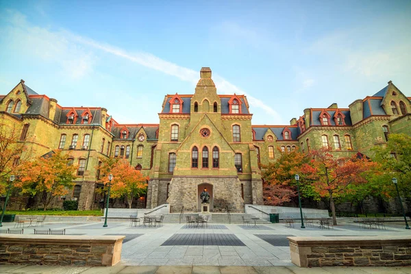

美国大学生平常怎么上课
在美国大学，学生每天的课不一定很多，但是课前和课后的事情很多。上课以前，学生常常要先看书、看文章，或者做一点准备。上课的时候，老师也常常会请学生回答问题、参加讨论。所以在美国上课，不只是听老师说，也要自己多想、多说。
下课以后做什么
下课以后，很多学生会去图书馆学习，或者和同学一起做小组作业。有的学生会去参加学生社团，有的学生会去运动。宾大有很多学生组织，也有运动和健身资源，所以大家可以按自己的兴趣安排时间。
怎么交朋友
对留学生来说，刚开始交朋友可能不太容易，可是有很多办法。你可以在课上认识同学，也可以参加社团活动、宿舍活动或者学校活动。要是你主动一点，常常会认识新朋友。很多美国学生也很喜欢跟别人聊天，只要你愿意开口，就会慢慢习惯。
跟老师的关系
在美国，老师和学生的关系常常比较开放。老师一般会有 office hours，也就是办公时间。学生如果有问题，可以去问老师。刚开始你可能会不好意思，可是其实老师很欢迎学生去问问题。这样对学习很有帮助。
学习和生活要平衡
在宾大，学习很重要，可是生活也很重要。你可以认真上课，也要注意休息、吃饭和运动。要是每天只学习，不跟别人说话，也不出去走走，可能会觉得很累。所以，好的大学生活应该是学习、活动和休息都有。
宾大的宿舍和食堂
每个宿舍一般都提供空调、热水、自习室、休息室、厨房和浴室。有的宿舍还有音乐练习室、健身房、计算机房和食堂。宿舍房间一般是单人间或者双人间。如果你住双人间，常常会和同屋一起生活。很多学生会在 Instagram 或 Facebook 上先找同屋。搬进宿舍以前，最好先聊一聊彼此的生活习惯，这样更容易相处。
每个房间一般都有床、书桌、衣柜、书架和抽屉。有的宿舍还有小厨房、小客厅或者自己的浴室。来大学以后，宿舍就是你的新家，所以要注意生活环境，把房间保持干净，比如打扫房间、整理床铺等等。
一年级常见宿舍
一年级学生一般住在 Quad、Hill 或者 Kings Court English House。Quad 里有 Riepe、Ware 和 Fisher Hassenfeld，很多新生会先住在这里。每个宿舍的气氛不太一样，你可以按照自己喜欢的生活方式来选择。
上课楼、学习楼和常见校园地点
宾大的教室分布在很多楼，比如 DRL、Huntsman Hall、Claudia Cohen Hall 和 Meyerson Hall。不同课程会在不同楼上课，所以开学前最好先看课表和教室位置，提前熟悉路线。很多学生平常也会去 Houston Hall、Van Pelt 图书馆或者学校草坪附近和同学见面、吃饭、讨论作业。

校园餐厅和咖啡馆
宾大有几个常见食堂，比如 Hill House、1920 Commons 和 Lauder College House。学校里也有很多别的餐厅和咖啡馆。在 Houston Hall，你可以吃到寿司、比萨、炸玉米饼、汉堡和沙拉。星巴克在 1920 Commons 的下面，其他不错的咖啡馆还有 Pret A Manger 和 Joe’s Cafe。1920 Commons 下面还有一个小超市，叫 Gourmet Grocer。如果你没有时间去校外超市，也可以在这里买一些日常用品或者零食。
学习空间、健身房和医疗资源
很多学生不喜欢在宿舍学习，他们常常和朋友一起去图书馆或者预定学习室，因为这样的环境更容易集中注意力。Fisher Fine Arts 图书馆非常漂亮，很多宾大学生也叫它“哈利波特图书馆”。在图书馆里也有打印机和复印机，学生可以打印作业或者学习资料。
每个宾大学生都可以去 Pottruck 健身房运动。那里有很多健身器材，也有团体健身课、瑜伽课，还有游泳池。除了学习，规律运动也很重要。
在大学里，我们不仅要努力学习，也要注意身体和心理健康。如果你生病了，可以去 SHS（Student Health Services）看医生，然后给老师发邮件请病假。心理健康也很重要。大学生活有时候会有压力，特别是离家很远的时候，有些学生可能会觉得难过或者孤单。宾大的 CAPS（Counseling and Psychological Services）可以给学生提供心理支持。如果你需要帮助，不要犹豫，可以去找他们。
常见错误（Common mistakes）
- 错过 add/drop 截止日期：开学前几周一定要常常看学校日历，按时加课、退课。
- 不常看邮件：很多重要通知（课程、作业、缴费、签证相关提醒）都会发到学校邮箱。
- 包裹地址格式写错：下单前先确认宿舍收件格式，名字、楼名、房间号和邮编都要写清楚。